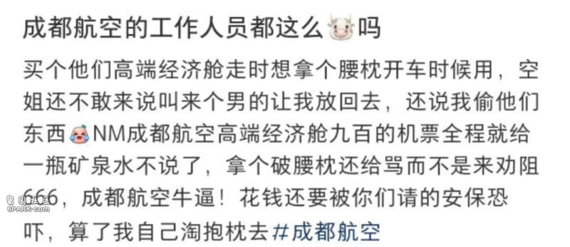
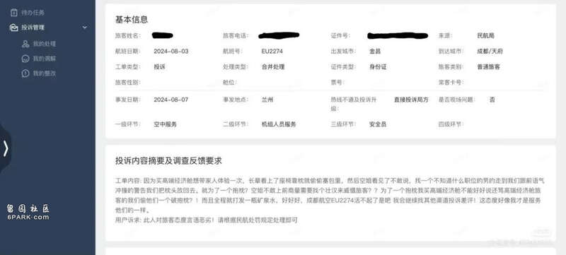

网上看到这么一条：

他是如何做到如此振振有词的呢？
但没想到，还有后续，这位旅客真的还投诉了：

投诉内容摘要及调查反馈要求：
投诉内容：
“因为买高端经济舱想带家人体验一次，长辈看上了座椅靠枕，就偷偷塞包里，然后空姐看见了不敢说，找一个不知道什么职位的男的走到我们跟前，语气冲撞的警告我们把枕头放回去。
就为了一个抱枕？空姐不敢上前商量需要找个壮汉来威慑旅客？为了一个抱枕我买高端经济舱不能好好说还骂高端经济舱旅客的我们偷他们一个破抱枕？！
而且全程就打发一瓶矿泉水，好好好，成都航空活不起了是吧？我会继续找其他渠道投诉差评！这态度好像我才是服务他们的一样。”
旅客诉求：此人对旅客态度言语恶劣！请根据民航处罚规定处理即可。
话说列位读者，该如何解释、或者说如何去说这个事，才会让这类旅客理解呢？我觉得很难。
“我拿你两个枕头算什么？？”
而且，他是如此的理直气壮。
座椅靠枕是飞机上的公共财产，旅客未经同意将其据为己有的行为已经涉嫌违法。空乘在发现这种情况时，请安全员出面劝阻制止，合情合理合法，并无不妥。
对于旅客提出的“高端经济舱只提供一瓶矿泉水”的抱怨，这也并非服务不到位的问题。不同航空公司、不同舱位的服务标准和内容可能会有所不同，旅客在购票时应当了解和理解这些差异，以免产生不必要的误会和期待落差。
而这位旅客的投诉中充满了对航空公司的指责和不满，但忽略了自己的行为是否真正得体，也未曾反思自己是否遵循了相应的规章制度。
类似的事情，在民航并不少见。看似寻常的纠纷背后，隐藏着一些人对规则意识的漠视以及对自身行为的缺乏反思。
首先，我们需要明确，旅客及其长辈私自将航班座椅靠偷偷枕塞进行李包企图带走的行为，并非一件无关紧要的“小事情”。
航空公司提供的座椅靠枕属于航空公司的财产，在未获得航空公司许可的情况下擅自占有，可能构成侵占他人财物的违法行为。虽然单个靠枕的价值或许并不高昂，但这种行为的性质却是不可忽视的。
从法律角度来看，侵占公共财物的行为，情节较轻的，可能需要承担民事赔偿责任，返还所侵占的财物，并对造成的损失进行赔偿。如果情节较为严重，涉及金额较大或者多次实施类似行为，将承担治安违法乃至刑事责任。
回到这起投诉事件本身，旅客的愤怒与不满更多地聚焦于航空公司工作人员的制止行为，却未曾思考自己及家人行为的不当之处。这种态度反映出了一种普遍存在的社会现象——在面对自身利益与公共规则的冲突时，人们往往倾向于强调个人的感受和需求，而忽视了规则的存在和其重要性。
购买高端经济舱本是为了给家人带来更好的飞行体验，这一初衷无可厚非。但体验的提升不应以违反规则、侵犯他人权益为代价。航空公司制定的各项规章制度，并非是为了刻意为难旅客，而是为了确保每一位乘客都能在公平、安全、有序的环境中享受航空服务。
座椅靠枕作为航班服务的一部分，其合理的使用和管理是保障整体服务质量的一个环节。
旅客在投诉中对航司的指责，实际上是一种逃避责任的表现。他们没有意识到，自己的行为不仅破坏了航班的正常秩序，也对其他乘客的权益造成了潜在的影响。
如果每一位旅客都像他们一样，随意将机上公共服务用品据为己有，那么航班的服务将无法正常开展。
在社会生活的各个领域，规则无处不在。无论是交通出行、商业交易还是公共服务，遵守规则都是维护社会秩序、保障公平正义的基石。我们不能因为一时的私欲或者疏忽，就轻易地破坏规则。
对于航司而言，在处理此类事件时，应当坚持原则，同时也要注重方式方法。机组人员在制止违规行为时，应保持专业和耐心，向旅客清晰地解释相关规定和行为的不当之处。
航司也可以通过加强宣传教育引导，提前告知旅客使用机上服务用品注意事项和规定，比如哪些可以带走，哪些需要付费使用，哪些可以购买带走，从源头上努力减少此类纠纷的发生。
而作为旅客，我们更应该增强自身的规则意识和法律意识。在享受服务的同时，严格遵守相关规定，尊重他人的权益和公共资源。只有当每个人都能够自觉地遵守规则，社会公共生活才能更加安全有序、和谐文明。
而至于这个投诉的处理，我的建议是：
不予受理。